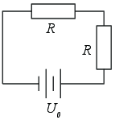
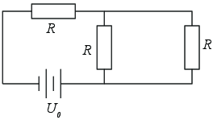
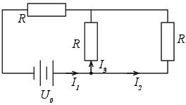
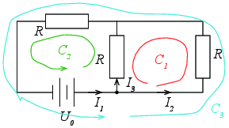
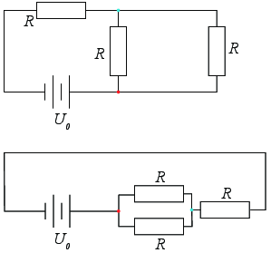

Figuren viser en krets som inneholder et batteri \( U_0 \) og to motstander \( R \).

a) Hva bestemmer hvilken vei strømmen kommer til å gå i denne kretsen?
Potensialforskjellen på batteriet (spenningen).
b) Velg en positiv strømretning den veien du tror strømmen kommer til å gå. Skriv opp Kirchoffs spenningslov langs en bane som følger denne strømretningen.
Positiv strømretning mot klokka (positiv rotasjonsretning). $$\sum \Delta V = U_0 - IR - IR = 0$$
c) Hva blir strømmen?
d) Velg motsatt strømretning. Skriv opp Kirchoffs spenningslov for den samme banen med denne strømretningen.
Positiv strømretning med klokka (negativ rotasjonsretning), men Kirchoffs lov langs en bane med klokka: $$\sum \Delta V = U_0 + IR + IR = 0$$
e) Hva blir strømmen?
Vi utvider kretsen til å inneholde en motstand til som vist i figuren.

f) Definer positive strømmer i kretsene. Hvor i denne kretsen kan vi anvende Kirchoffs strømlov?
I knutepunktene.

g) Skriv ned Kirchoffs strømlov for ett av punktene du valgte ovenfor.
Punkt markert med sirkel ble valgt. Vi ser på netto strøm inn i dette punktet: $$I_1 - I_2 - I_3 = 0$$
h) Hva blir Kirchoffs strømlov i det andre punktet?
Netto strøm inn i det andre punktet: $$I_3+I_2-I_1=0$$
i) Hvor mange sløyfer finner du i denne kretsen? Tegn inn sløyfene i figuren.
3

j) Skriv ned Kirchoffs spenningslov for alle sløyfene du finner.
For \( C_1 \): \( I_2 R -I_3 R = 0 \).
For \( C_2 \): \( U_0 - I_3 R -I_1R = 0 \).
For \( C_3 \): \( -I_2 R -I_1 R + U_0 =0 \).
k) Finn strømmene.
(Her er det i prinsippet lurt å finne strømmene i en bestemt rekkefølge, slik at utregningene blir enkle. Men fysikken i problemstillingen ligger i å skrive opp likningene - så kan man løse dem med en lineær likningsløser om man vil. Bry deg ikke om triks for å gjøre likningssettet enkelt - det løses trivielt med en symbolsk eller numerisk metode i Python.) $$I_1 = \frac{2}{3}\frac{U_0}{R}, I_2 = \frac{1}{3}\frac{U_0}{R}$$
l) Tegn om kretsdiagrammet slik at det blir opplagt at dette er en seriekobling av en motstand \( R \) og en motstand som består av en parallellkobling mellom to motstander \( R \).

m) Brukte du alle likningene du fant for Kirchoffs spenningslov og Kirchoffs strømlov? Forklar.
Nei, vi brukte kun en av likningene fra Kirchoffs strømlov, fordi de to likningene er identiske. Tilsvarende brukte vi kun to av likningene fra Kirchoffs spenningslov fordi den tredje da vil være lineært avhengig av de to andre.